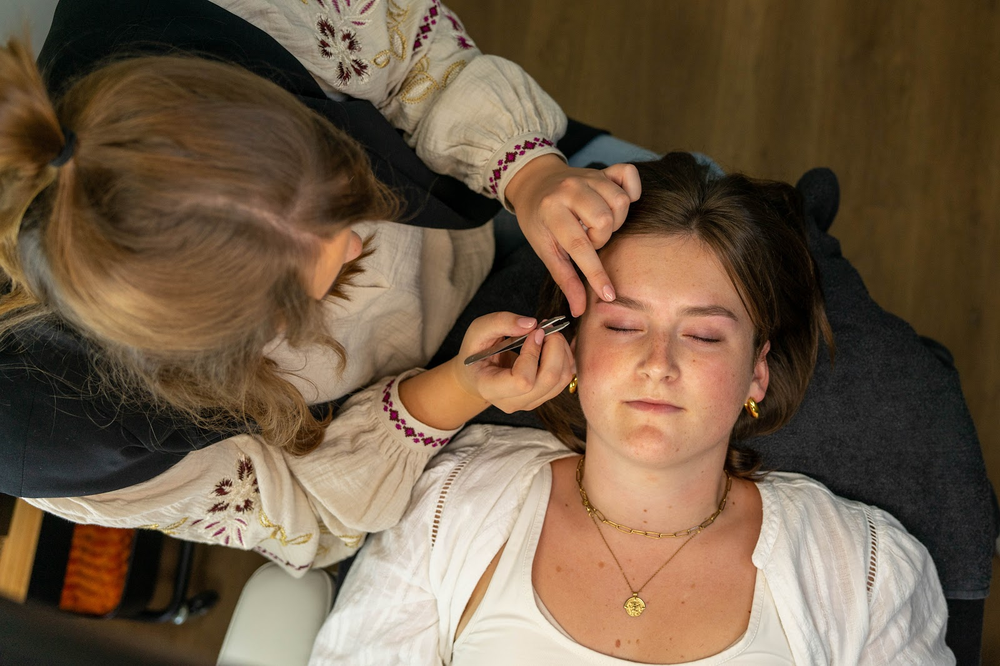
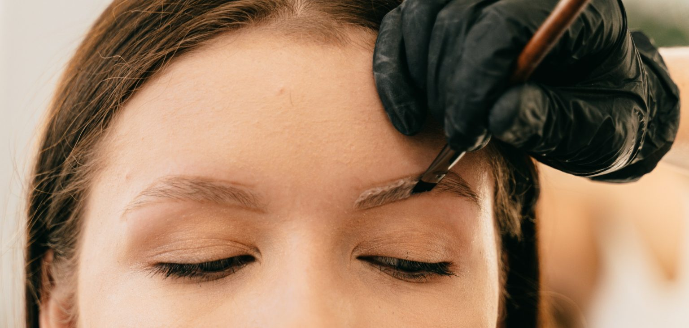
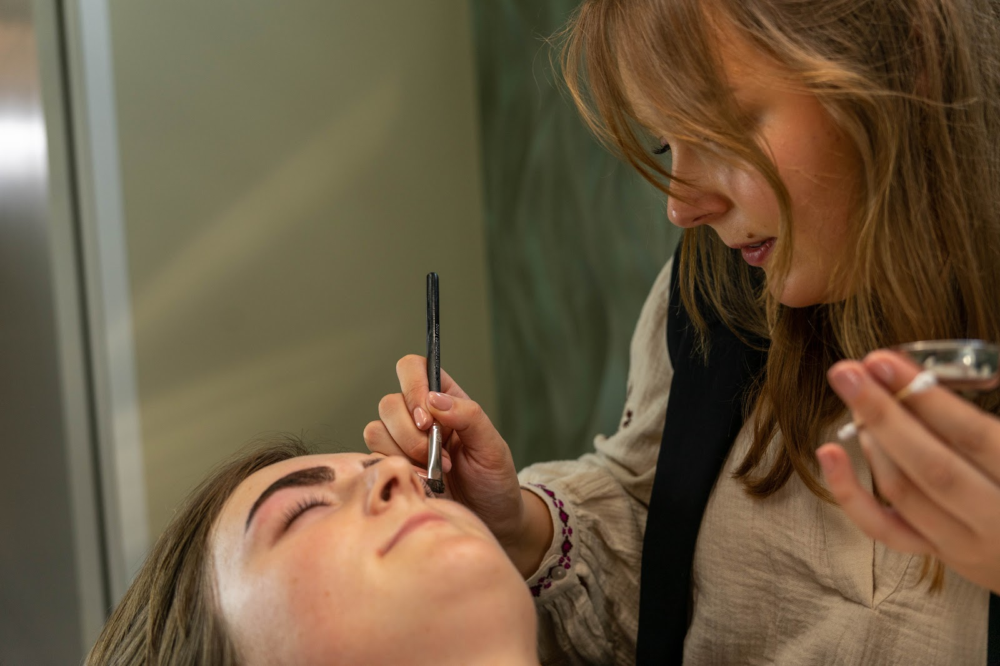
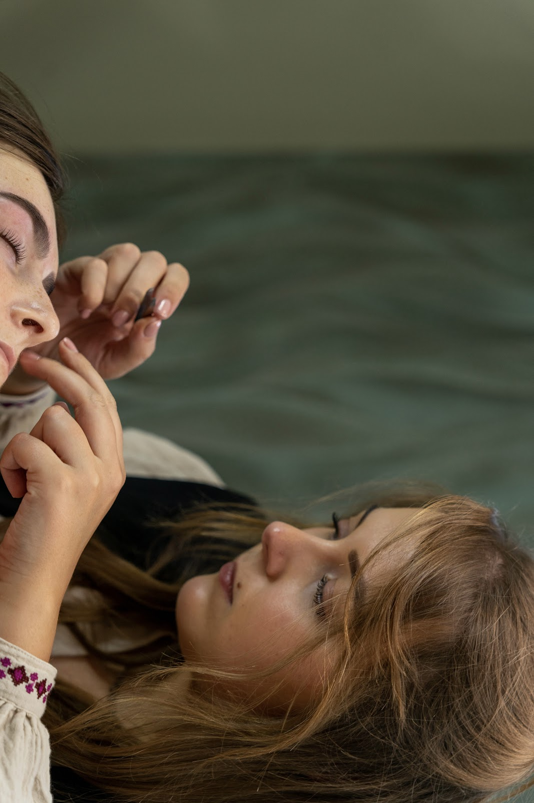
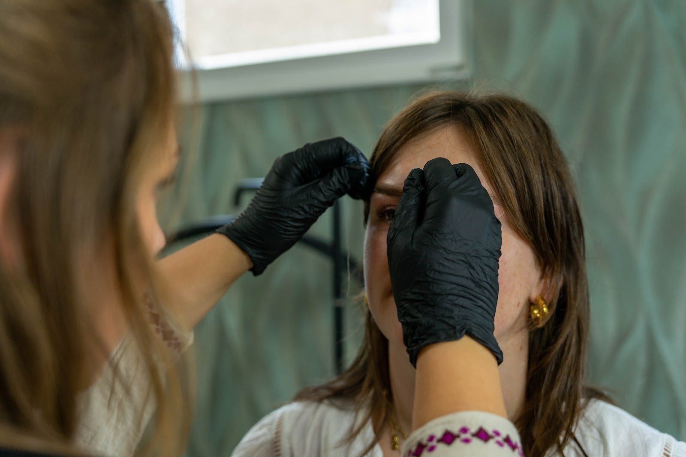
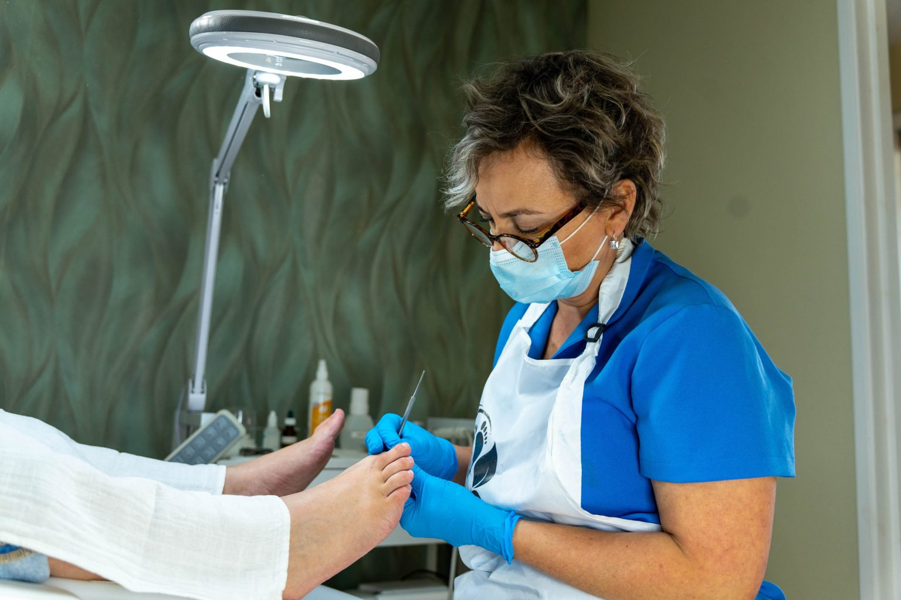

Harsen en epileren
- Wenkbrauwen
- Bovenlip
- Kin
- Wenkbrauwen en bovenlip
- Wenkbrauwen, bovenlip en kin
- Bovenlip en kin
Wenkbrauwen, wimpers en beauty in Aalten
In haar salon aan huis neemt Sylke echt de tijd voor je. Ze luistert naar wat je wilt en werkt heel nauwkeurig, tot je wenkbrauwen precies goed zitten.
5,0 uit 23 Google-reviews

Dit zijn de behandelingen die het meest geboekt worden. Twijfel je wat bij je past? Sylke denkt graag met je mee.

Vraag naar prijzen en de mogelijkheden als je belt.
Bel 06 8022 7497

Sylke is al jaren gediplomeerd allround schoonheidsspecialiste. Vanuit haar salon aan huis in Aalten helpt ze je op een professionele manier, met persoonlijke aandacht en eerlijk advies.
Geen haast, geen lopende band. Je ligt even heerlijk stil, Sylke werkt secuur, en je gaat naar huis met wenkbrauwen en wimpers die natuurlijk bij je passen.
5,0 uit 23 Google-reviews
“Ik laat inmiddels al een tijd mijn wenkbrauwen doen bij Sylke en ik ben iedere keer weer super blij met het resultaat! Sylke werkt heel nauwkeurig, denkt goed met je mee en zorgt ervoor dat je je meteen op je gemak voelt. Altijd gezellig om naartoe te gaan! Dikke aanrader. 🤩”
“Via vriendinnen bij Sylke terecht gekomen en mega blij met het resultaat! Wenkbrauwen laten verven en shapen samen met mijn wimpers laten krullen en verven. Een mooi en natuurlijk resultaat waar ik lang plezier van heb. Sylke neemt echt de tijd voor je en kan erg gezellig kletsen. Een plezier om naar toe te gaan!🫶”
“Altijd erg tevreden. Vanaf begin af aan laat ik mijn wenkbrauwen en wimpers doen bij Sylke en nog steeds een trouwe klant. Ze luistert goed naar wat je wil en ze levert deze wensen ook! Zelfs toen ze op reis was, heb ik gewacht tot dat ze weer terug was, wilde nergens anders heen. …”
“Sylke maakt tijd voor iedere behandelingen en is erg secuur! Altijd gezellig en leuk om bij Sylke langs te komen🫶🏼. Ik ben erg tevreden hoe Sylke mijn wenkbrauwen weer mooi maakt. Sylke weet precies hoe ik mijn wenkbrauwen wil en wanneer het anders uitpakt zorgt ze ervoor dat het toch eruitziet zoals ik wil. …”
“Ik kom al jaren bij Sylke in de salon voor het shapen en verven van mijn wenkbrauwen. Altijd super tevreden met het resultaat! Sylke heeft een fijne, schone en ontspannen salon en ze is altijd klantvriendelijk en gezellig. Ook mijn bruidsmakeup heb ik door Sylke laten doen. …”
Bel voor een afspraak of stuur een berichtje. Heb je een vraag over een behandeling? Ook dan helpt Sylke je graag verder.


Sylke deelt de salon met Anke van BijAnke, gediplomeerd medisch pedicure met jarenlange ervaring in de zorg en aangesloten bij ProVoet. Zelfde adres, eigen afspraken.